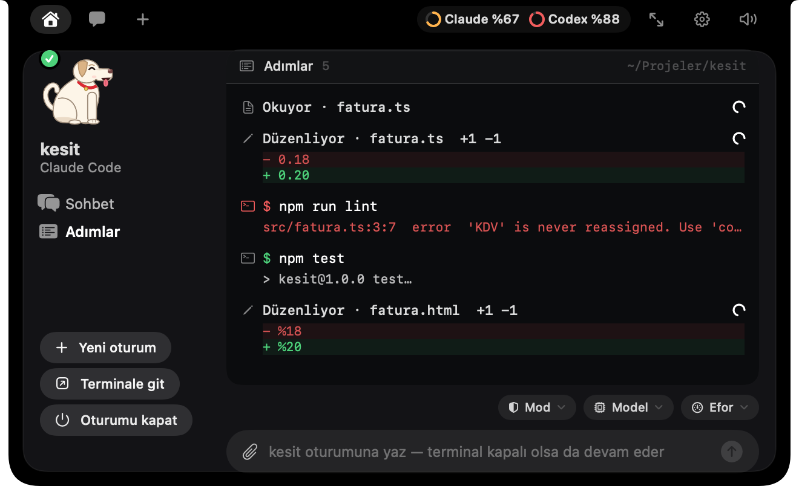
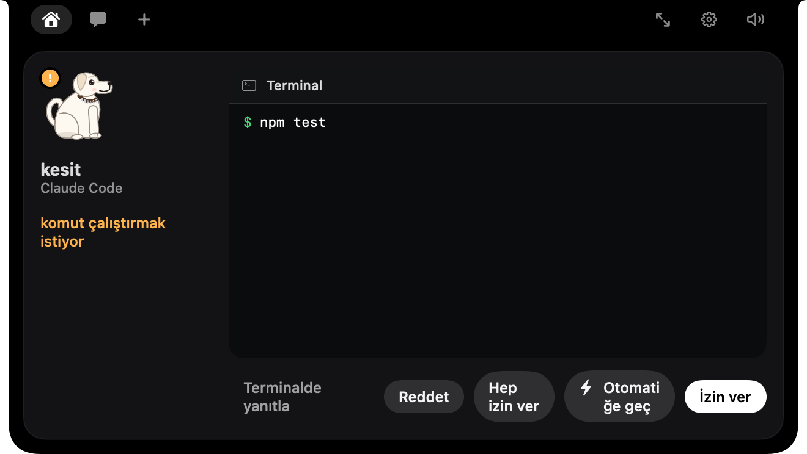
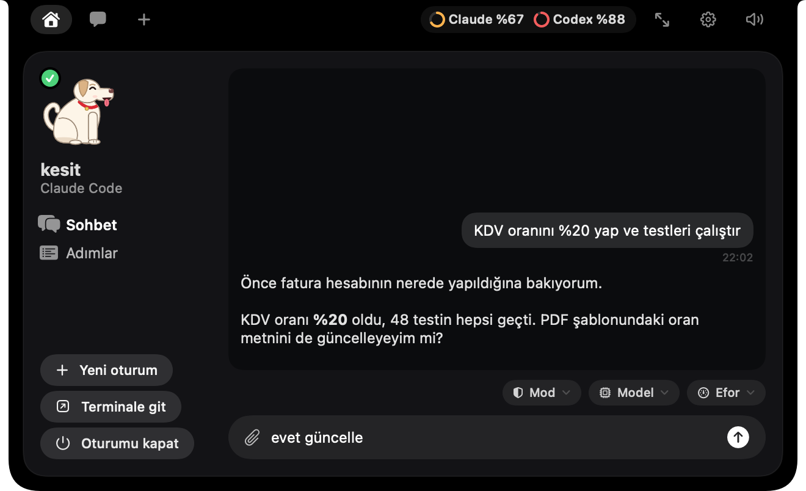
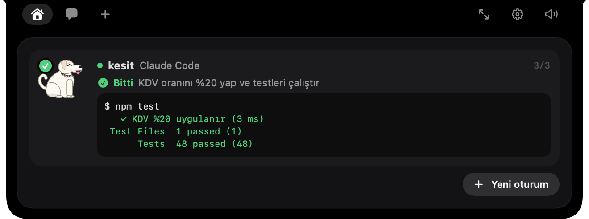
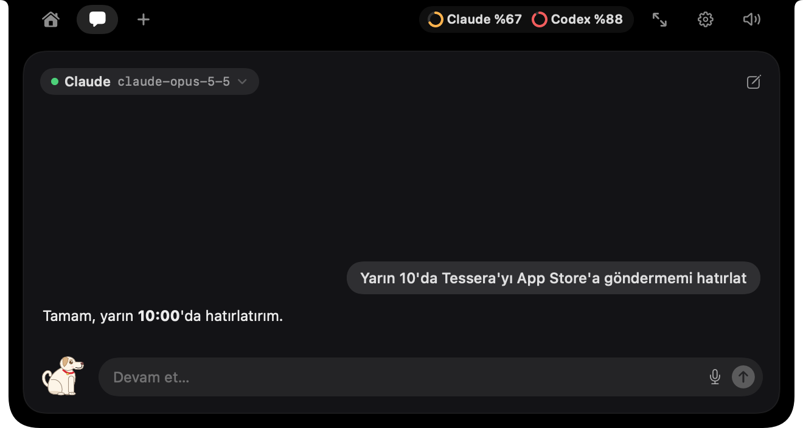
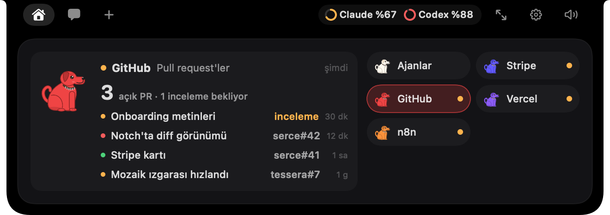

☺
◎
>_
✎








↑




!
✓








Bir bakış. Her şey gözünün önünde.
Dosyalar. Komutlar.
Satır satır değişiklikler.
Terminali aramadan.
Doğrudan çentikten.
Oturumuna çentikten yaz.
Kaldığın yerden devam et.
Paralel oturumlar.
Hepsi aynı yerde.
Hatırlatıcılar ve
tekrarlayan otomasyonlar.
Stripe · GitHub
Vercel · Cal.com
Erken erişim · hi@tahayerdekalmazer.com
 Hav!
Hav!